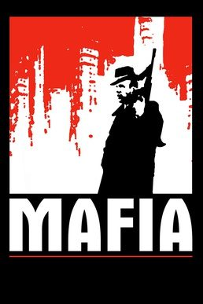

Mafia (PC)



(God Games)
Set in the 1930’s America of classic gangster movies, Mafia aims to give players an authentic and detailed look into world of organized crime. Inviting comparison to Max Payne in its visuals and GTA III in its gameplay, Mafia offers a unique blend of driving and third-person action.
With an attention to detail evident in all aspects of its presentation, Mafia’s graphics are often startlingly realistic. While the polygon counts on the characters aren’t that high, the textures are extremely well done and highly convincing. The frequent cut-scenes are particularly cinematic, with swooping camera angles and characters that convey real emotion. The motion capture is also excellent, with the facial expressions and movement of the characters often looking so realistic that you can forget that you’re playing a video game.
The game’s strongest point however lies in the strength of the narrative: as a highly cinematic game containing a rich and complex story, Mafia manages to convey perfectly the atmosphere of a classic gangster movie. You assume the role of cab-driver Tommy Angelo during the 1930’s, and Mafia tracks his progress over a decade as he rises through the ranks of organized crime in the City of Lost Heaven. Gamers used to the stumbling attempts to create a cinematic atmosphere found in many action games will find Mafia’s narrative surprisingly complex and cleverly executed, with frequent lashings of the trademark mob cold-blooded violence. The standard assortment of gangster characters are all included: the big boss Saleveri, the behind-the-scenes organizer Frank, and the violent and unstable Pauly.
As a mobster tainted by crime and violence, the game’s protagonist is far from a flawless hero. The mission objectives become increasingly violent and morally ambiguous as the game progresses, with the player required to perform hits on seemingly innocent characters and conduct public mob-style executions in broad daylight. One of Mafia’s most memorable shoot-outs takes place at the funeral of one of the goons that Tommy executed earlier, with vengeful mobsters out for your blood and innocent family members caught in the cross-fire.
Constituting a significant part of the gameplay, the driving elements found in Mafia are an odd mix of the good and the bad. The developers have sought to authentically recreate the atmosphere of 1930’s America in Mafia; all of the citizens are dressed in 1930’s attire, the city streets are visually convincing, and you have a wide selection of vintage cars to play with. All of the cars handle accurately and are modeled authentically from the time period, and the ability to shoot out the car window while driving adds a welcome new level to the driving.
However, the frequent driving around contained in Mafia quickly makes apparent a few drawbacks; most significantly, the city is not nearly as convincing, vibrant, or alive as the Liberty City featured in GTA III, nor is it as architecturally complex or well designed. And while the City of Lost Heaven frequently looks stunning and realistic, this immersion is muted somewhat by the jarringly close draw distance of the graphics, and the simple textures on many of the buildings. And unfortunately, the authenticity often comes at the expense of fun; the driving can grow a little tedious at times, and the driving physics have none of the exaggerated arcade fun of games like GTA III and Midtown Madness. While this may mean that they are authentic to the time period, it doesn’t really make them that fun to drive: the cars are often unwieldy and hard to turn, difficult to drive and frustratingly slow. And further putting the focus on realism, Mafia’s designers seem intent on suppressing any tendencies towards chaotic behavior, with the police vigilantly hunting you down if you exceed the speed limit.
While the driving aspect of Mafia has its obvious flaws, the third-person action of the game is significantly better, full of riveting cinematic action. While the emphasis is again on realism, this focus somehow seems much more appropriate when it comes to combat, never standing in the way of fun. The weapons in particular feel very authentic, shuddering realistically and knocking-back when you fire. The double-barrel shotgun is brutally powerful, taking enemies out with a single shot and leaving satisfying blood stains all over the walls. The enemy AI is also excellent, with mobsters ducking and taking cover to get out of your way. The indoor environments look fantastic, and the missions are lovingly crafted and highly detailed, full of stylish action.
The gameplay is consistently well scripted, and due to the variety of different missions on offer and their integration into the overall narrative, Mafia never feels like a stock-standard shooter. You are often accompanied by mobster colleagues in your exploits, and the game contains many memorable shootouts and set-pieces. One scene which sees the mob under siege at a deserted farmhouse on a stormy night is literally dripping with atmosphere; you have to rescue a wounded colleague, protect him from the ensuing rival mobsters, and then hold back pursuing cars from the back of a truck with a machine gun as you escape. While Mafia can sometimes become quite frustrating as there are no mid-level saves, this nonetheless ensures that the action always remains challenging.
While it is a little unfair to compare Mafia to GTA III because they're very different games, in the end it's hard not to; instead of unleashing you in a huge freeform city, Mafia restricts the player to moving in a directly linear progression. When a player fails a mission in GTA III, they continue to exist in the game world, and are free to take a job from a different boss. If you fail a mission in Mafia, you are taken back to the starting line, with no way of moving forward other than to try and complete the mission again. As you can imagine, this takes away a very large part of your freedom. The upside to this linear structure is that the missions themselves are of a consistently high quality; yet in spite of the polished presentation, Mafia is ultimately less immersive and not quite as convincing as GTA III.
In spite of its flawed driving model and restrictive linear gameplay, Mafia is redeemed by its superior presentation, narrative, and the unique fun of the third-person shooting. While not perfect, Mafia is a polished piece of cinematic gaming entertainment that deserves more than a second look.
7 Out of 10